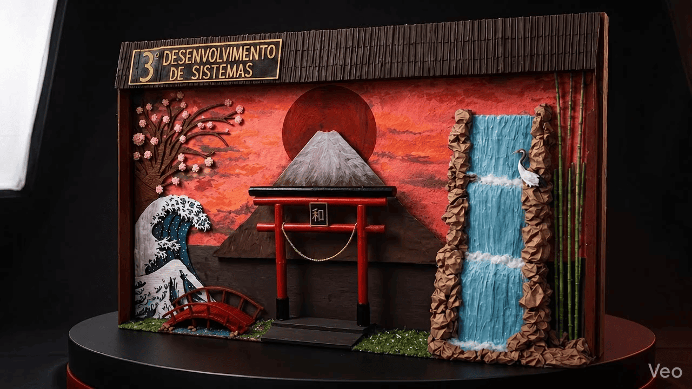

Criamos este site em 3D para que o público consiga visualizar melhor o painel e explorar cada detalhe de forma mais interativa. A proposta une elementos da cultura japonesa com tecnologia desenvolvida por nós mesmos, permitindo uma experiência diferente e mais dinâmica durante a apresentação.
Carregando experiência...
Arraste para girar

Use o controle ou arraste o modelo acima